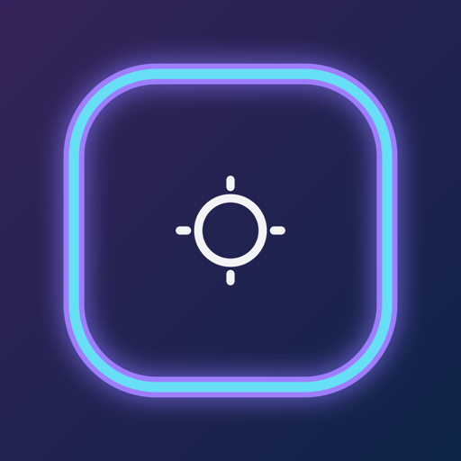

NoTabsConfusion
Swipe up with four fingers and Mission Control shows every open window. Most apps are plain black or white, and the windows change place every time you swipe.
This keeps a set color on the three you used last, so you can see where you came from and where you were going.
- The one you just left: purple.
- The one before that: amber.
- The one before that: teal.
Install
- Unzip the download and move NoTabsConfusion into Applications.
- Open it. There is no Dock icon. The scope mark in the menu bar is the app.
- Allow access when macOS asks, so it can see which window is in front. It also needs Accessibility.
Privacy
No account, no ads, and no network requests. Window frames and app icons stay on your Mac. Privacy note.